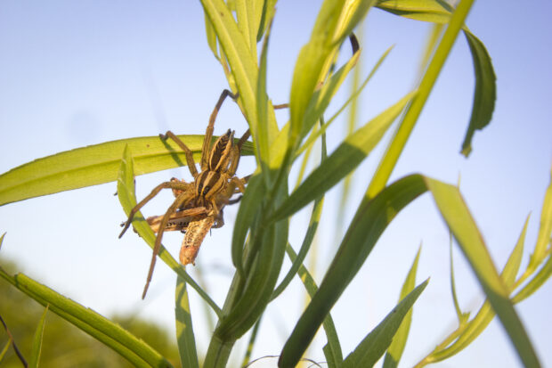

A wolf spider eats a grasshopper on a grass stalk hedgerow, just about five feet away from a row of tomatoes. Credit: Marshall Hinsley. Used with permission.
Every night as Marshall Hinsley walks through his farm in Texas, hundreds of tiny bright dots light up the land when he shines his flashlight into the distance.
“It’s like glitter,” he says. “Those are all the eyes of spiders just blanketing the landscape.”
Hinsley’s farm didn’t always dazzle. The spiders – and a zoo of other insects – appeared soon after he stopped using insecticides and planted rows of Texan wildflowers and shrubs such as blue bonnets, Indian blanket and Indian paintbrush on his five-acre plot south of Dallas. The army of creepy crawlies – spiders, wild bees and ladybugs – is Hinsley’s closest ally in his quest for organic farming.
“I credit the spiders are probably taking care of about half of potential insect pest issues,” he says.
The insects both patrol and pollinate his crops: dragonflies hover over peppers and melons eating insects, assassin bugs eat up cucumber beetles and ladybugs take care of aphids around the farm.
A flurry of recent research from Claire Kremen’s lab at the University of California, Berkeley recently confirmed Hinsley’s observations that simply reducing pesticide use and planting a row of native plants and shrubbery around farms can lure wild pollinators and natural pest predators. Quite literally the field of dreams: “if you build it, they will come.” This new technique is beginning to get more interest from farmers and is an emerging solution to two major issues plaguing U.S. agriculture – the excessive use of pesticides and farmers’ reliance on a single bee species—the honeybee—for pollination.
A native hedgerow, or a row of native plants circling a farm, is meant to create an ecosystem of plants that naturally grow together in the region. A study published in Agriculture, Ecosystems and Environment reported that Californian native hedgerows of shrubby chaparrals and poppies were able to attract a variety of wild bees and reduced the number of pests such as aphids on a tomato farm in Sacramento Valley, California.
Crops on conventional single species farms, or monocultures, bloom for only a few weeks every year. With no flowers to visit, these lands often become resource deserts for wild bees and other insects. Native hedgerows are meant to augment that.

A native bee (Halictus tripartitus) makes way for an incoming honeybee at a Great Valley phacelia (Phacelia ciliata) at a forb planting in California’s Yolo County. Credit: Leithen M’Gonigle. Used with permission.
“Really quickly we started finding that hedgerows support a lot of pollinators and natural enemies and its quite amazing really,” says Lauren Ponisio, an ecologist at UC Berkeley. “You’re in this incredible desert for something like an insect, and you put these resources out there and somehow they appear.”
Hedgerows increase the richness of native plant and insect species and also improve productivity on the farm. Ponisio calls it having the cake and eating it too. “We’d like to have our conservation benefit by supporting native wildlife in these areas, and then we’d also like the ecosystem services in which they actually pollinate the crops,” she says.
The U.S. has more than 4,000 species of native bees, but honeybees have traditionally dominated the pollination market in U.S. agriculture. The economic value of honeybee pollination services was estimated between $6 billion and $14 billion annually in the U.S. alone, according to a 2006 report from the Food and Agricultural Organization of the United Nations. Each year, a truck full of honeybees can travel more than 11,000 miles across the country to pollinate almonds in California, oranges in Florida or apples in New York.
But the need to diversify pollination has never been greater. Honeybees have been dying in unusually large numbers across apiaries since 2006; the latest report from the Bee Informed Partnership estimates U.S. beekeepers lost an alarming 44 percent honeybee colonies in 2015-16. It spurred President Obama into issuing a Presidential memorandum that helped create a science-based Pollinator Research Action Plan.
Research shows honeybees – and wild bees – benefit from hedgerows. Honeybees don’t find enough floral resources as they travel from one big commercial monoculture crop to another. “Honeybee colonies are hammered by diseases and pests,” says Hillary Sardiñas, Pacific Coast Pollinator Specialist at the Xerces Society. “When they visit hedgerow plants, they get varied nutrition that improves their overall health.”
“You can think of hedgerows as a win-win-win,” she says. “You’re improving health of native bees and honeybees, and in turn both of them are doing a better job pollinating a farmer’s crops. Finally, the farmer gains by getting higher yields.”
Hinsley first noticed that native plants were driving production on his farm when he observed that other low biodiversity urban farms in Dallas were having problems with pollination. “It seemed to come down to the fact that they rarely saw honeybees or native bees around their plants and I, in contrast, really couldn’t shake them off the stick,” he says.
John Anderson and Sam Earnshaw, both farmers in California, were early champions of the idea to combine native ecosystems and cultivars. Evolving the traditional English hedgerow originally meant to mark property boundaries, Anderson started edging crop farms with native vegetation in 1978.

An annual insectary strip established within a field to attract beneficial insects (includes dill, cilantro, cosmos, bachelor buttons, marigold, holy basil, nasturtium) on Joan Olson’s farm in Minnesota. Credit: Joan Olson. Used with permission
“Anderson and Earnshaw have really motivated farmers around them to adopt hedgerows,” says Sardiñas. “We’re working to try and raise awareness to the wider farmer audience.”
Joan Olson of Prairie Drifter Farm in Litchfield, Minnesota has hedged her 33-acre lot with wildflowers and grasses native to the local land. These include wild bergamot, mountain mint and red osier dogwood. “We wanted to put in a mix that would be good for pollinators, soil erosion and would be pretty too,” Olson says. “We wanted to invite native pollinators and insects that would help us control our insect problems that would help us improve our operations and production.”
While hedgerow adoption is still low, Ponisio says more people are getting interested. The Xerces Society helps farmers install and manage hedgerows across the country. They put to rest concerns farmers may have such as the possibility of hedgerows harboring rodents, birds and pest insects. There is no evidence that hedgerows harbor any of these bad things, Ponisio says.
“Birds that are crop pests go in big flocks that move from crop field to crop field and don’t really use hedgerows,” Sardiñas says. “Birds that do use hedgerows tend to be the ones proving pest control in the crops.”
The Natural Resources Conservation Service provides cost share assistance to farmers to offset costs for practices like hedgerows and wildflower meadows. A new study published earlier this year shows that the assistance helps farmers pay off the cost of a hedgerow within three years, and they start seeing a net benefit from increased pest control and pollination. If they don’t take the cost share, it may take as long as eight years to pay off.
Urban farms are beginning to use and benefit from hedgerows as well. The Veggielution Community Farm in San Jose, California hedges with quail bush, deer grass, coffee berry, and coyote bush. They grow organic food without the use of pesticides or commercial honeybees. “We consider the native hedgerow to be critical to our integrated pest management plan,” says Executive Director Cayce Hill. “It is meant to attract beneficial insects that help us to keep the pest pressure from the bad bugs down.”
Sardiñas is optimistic about hedgerow adoption, but acknowledges that every farm will need something different.
“While hedgerows are incredibly important, we need to understand a little bit more about how they vary in different regions and for different crops in terms of their utility,” Sardiñas says. “Most of the research is out here in California, it would be nice to test them in more environments to make sure that they’re having the effects that we think they’re having.”
Tapping into evolutionary ways of farming does not mean letting the wilderness take over. The thread that runs through sustainable practices is to partner with the natural bent of the land. For Hinsley, it’s about preserving biodiversity and treading lightly on the earth. “The total of this [beneficial insect] activity is all because we don’t use pesticides and leave a great part of the land undisturbed,” he says.
This post first appeared online on the Scientific American Guest Blog on December 8, 2016.
Comments are closed.